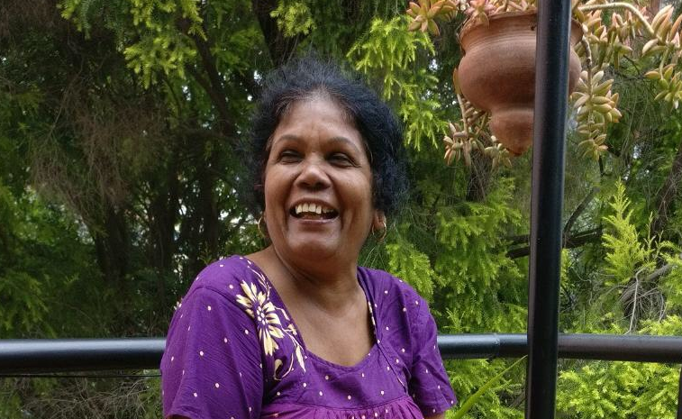
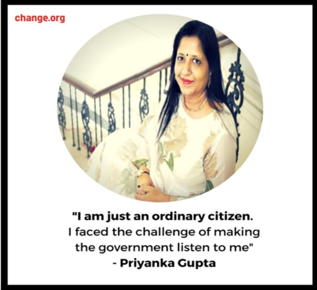
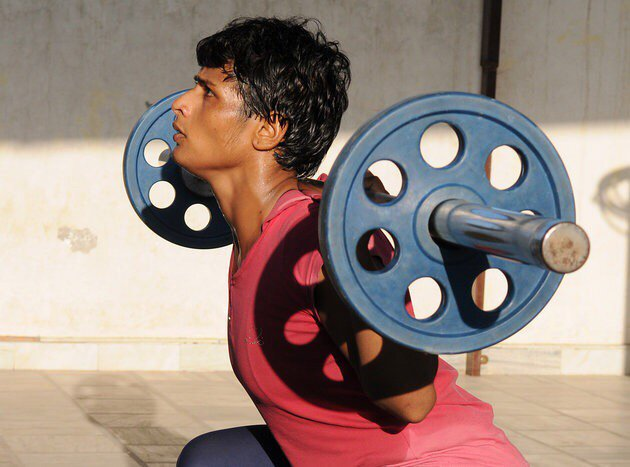
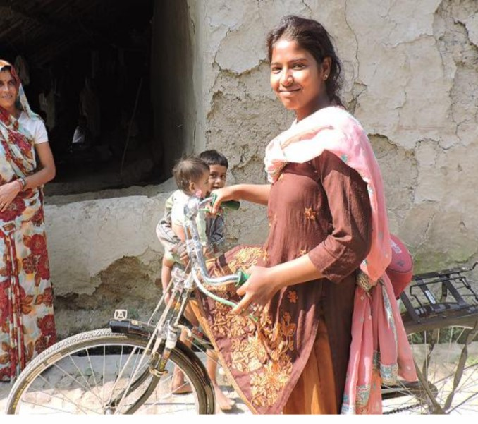
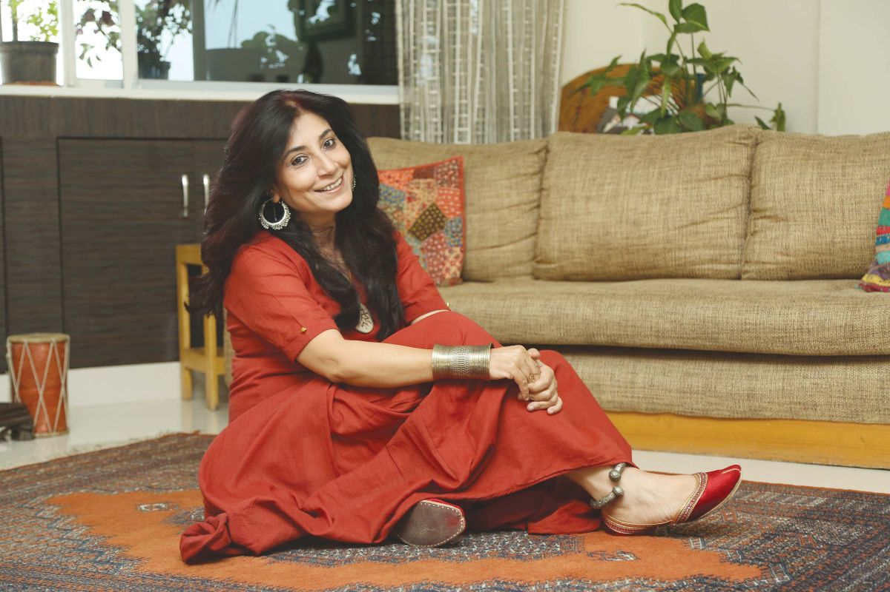

A stereotype is a generalized view or preconception about attributes that must be possessed by members of a particular social group or the roles that they should perform. “Dolls are for girls while boys play with cars” is one of the gender stereotypes which has been instilled into children’s minds from a very young age. Women are taught to be obedient, submissive, selfless and are conditioned to embody the feminine traits. They are hardly encouraged to speak up their minds. Moreover, some are afraid that being assertive of their opinions might seem disrespectful. These stereotypes and social stigmas attack the self-esteem of women and must be done away with. This article will introduce you to some ordinary yet courageous women who are standing up, speaking out, and leading change. These stories will inspire every woman to take charge of her own life and be herself, unapologetically.
Dakshayani hailed from a weak financial background and could only study until 10th grade. Being unmarried at 29 years of age, she was treated as a social outcast, ineligible for marriage and an ill omen on auspicious occasions. Frustrated, she left her village in Kerala at the age of 32 and came across a newspaper ad about becoming a mother in SOS Children’s Villages.
Today, Dakshayani is a 65-year-old mother of twenty children raised with love, care & freedom. They have succeeded in their careers and continue to fill their mother’s life with happiness and pride.
Priyanka Gupta was a catalyst in the historical changes in the Indian passport rules. Priyanka, a divorced mother had applied for a passport for her 18- year old daughter. Surprisingly, the application was rejected as the father’s name was missing. It was quite annoying as the legal guidelines, in contrast, stated that the father’s name was not mandatory. Tired of the court hearings, she filed a petition on Change.org, which received a whopping 1.5 lakh (150,000) signatures. She launched a 3-member inter-ministerial committee that finally resolved the matter.
Divorce is still considered shameful in the Indian societies. Not only does it cause difficulty in getting passports, but a divorced status often means public humiliation and disrespect of women. Priyanka’s petition has made the lives of such women easier and gave a voice to all those women who had previously been silenced by this stereotype.
Neetu comes from the Bhiwani village in Haryana. At the age of 12, she was married off to a 43- year old mentally challenged man. She had to go through severe abuse and was raped by her father-in-law. When she couldn’t take it any longer, she ran away from her house but was caught by her parents and married off again. By the age of 14, she was a mother of twin sons.
With her husband being unemployed, it was very difficult for the family to make the ends meet. To end the financial hardships, Neetu took up wrestling. She started her training at a facility in Rohtak and her hard work paid off soon when she won her first bronze medal at a national event. And then, there was no looking back! Neetu’s life changed dramatically as she went on to win medals at many national and international events. Today, she is a world class wrestler and a pride of India.
Priyanka Gupta was a catalyst in the historical changes in the Indian passport rules. Priyanka, a divorced mother had applied for a passport for her 18- year old daughter. Surprisingly, the application was rejected as the father’s name was missing. It was quite annoying as the legal guidelines, in contrast, stated that the father’s name was not mandatory. Tired of the court hearings, she filed a petition on Change.org, which received a whopping 1.5 lakh (150,000) signatures. She launched a 3-member inter-ministerial committee that finally resolved the matter.
Rajni was just 14 when her parents decided to marry her off, as was the common practice in their village. But rebellious Rajni refused to get married and convinced her father to let her continue her education. She saved herself from a fate similar to that of her mother’s which motivated several other boys and girls to stand up for themselves and say no to child marriage. She befriended the police officers in ger district, gained their support and protected her human rights. She travels over 60 km on a bicycle daily for her college education. Rajni is not only a Girl Icon recognized by Milaan foundation, but also the organizer of literacy workshops for girls. Rajni fights for 15.3 million child brides in India. Rajni has big plans for her future and aspires to be a police officer. She wishes to open schools for the less privileged children, teach girls to break the stereotype of being a burden and raise voice against the evil practices of society.
Anju Khemani is the founder of the Drama Association of the Deaf (D.A.D). She has spent over 11 years in the social sector, working with the differently-abled people. Anju resolved to break the barriers associated with disability and founded D.A.D. to empower the hearing impaired and encourage them to express themselves through theatre. They perform plays in sign language and participate in dance workshops. With exceptional senses, they recognize rhythms with balloon vibrations in their hands while the stereo plays music. Sometimes, they help conduct sign language classes for both the deaf and the non-deaf community.
India has a large community (18 million) of speech and hearing-impaired people who struggle for inclusion. Unfortunately, the non-deaf community is largely unaware of how to communicate with the deaf. The D.A.D. aims to make the deaf community know that they matter and are competent too. D.A.D. has received an amazing response from many cultural and professional institutions. Anju continues to work towards demolishing the social, cultural and mental barriers and to support the disabled in every way possible.